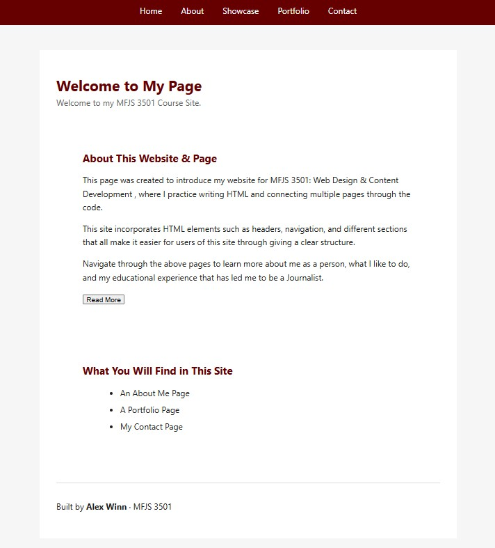
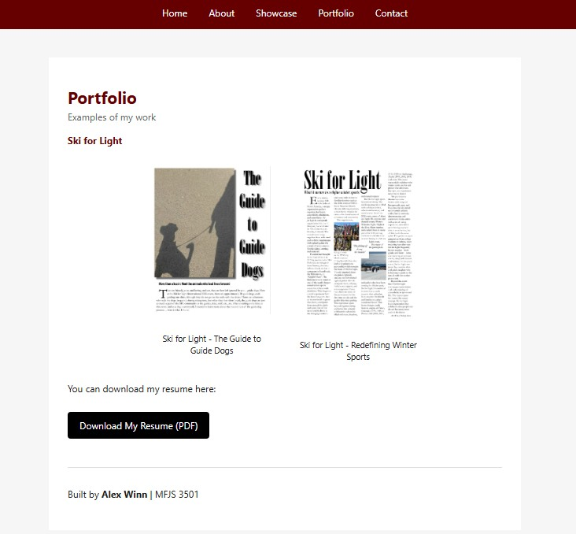

Welcome to My Showcase Page
Explaining my project...
About the Project
This project is a portfolio-style web project designed to demonstrate my ability to design and build interactive web expereinces. The site presents a clear layout, visual design, and nteractive features that are intended to engage users and communicate information effectively.
The concept behind this project was to create a clean and easy-to-navigate website that showcases my professional and academic works. With this, my target audience includes potential employers, collaborators, and peers who want to quickly understand my site's purpose, navigate through it, and determine my fit within potential opportunities.
Homepage Screenshot

Interior Page Screenshot

Tools Used
- VS Code
- GitHub (for building pages and files within repository)
- HTML (for pages)
- CSS (for style)
- Figma (for design planning)
Reflection
Throughout this project and course, I have learned how to structure a webpage, organize visual content, and publish a live website using GitHub Pages. I also built and improved my skills in HTML and CSS while learning how to present a project clearly for an outside audience such as recruiters or clients.